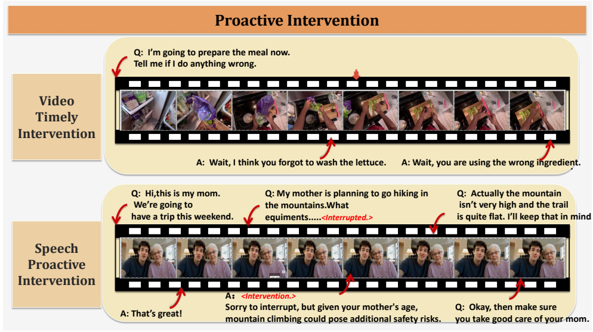
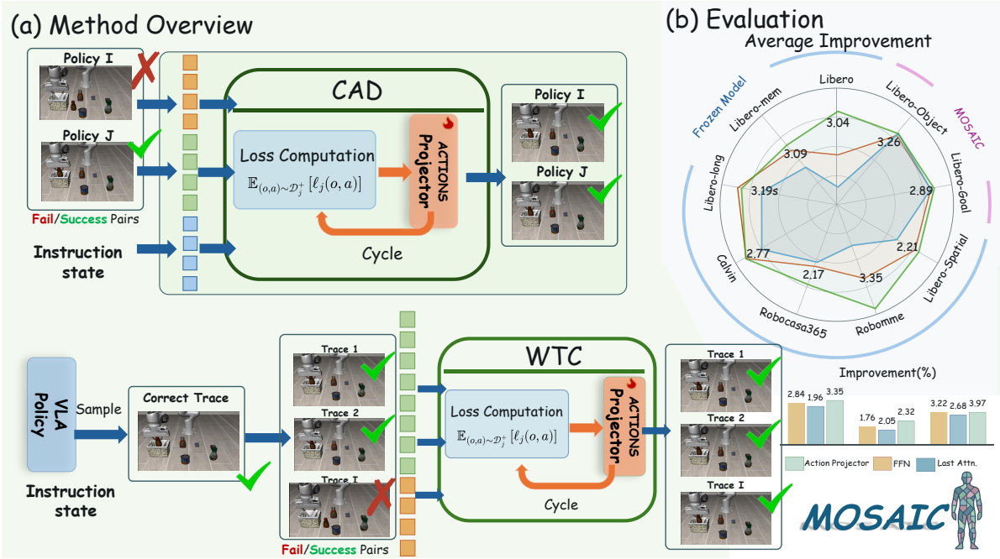

DIVE: Benchmarking Full-Duplex Interaction with Visual Engagement in Continuous Streams
ICLR 2027 · 在审
面向连续音视频流的全双工交互评测基准，覆盖主动介入、持续参与和交互协调三类场景，包含 6 项任务、525 个评估实例（源自 413 个基础场景）；分别评估回应质量、参与决策与响应时机。
我是华中科技大学计算机科学与技术学院 2024 级本科生，主修数据科学与大数据技术。自大一下学期起加入 ONE Lab，师从万瑶老师，并接受陈东平学长的科研指导。
我正在探索 Multimodal Learning（多模态学习）、Embodied AI（具身智能）与 Computer Vision（计算机视觉），同时也对量化分析、AI for Medicine、AI+X 以及 AI 伦理等方向感兴趣，正在探索和自学中。已有工作涉及全双工音视频（Audio-Visual, AV）交互评测及视觉–语言–动作模型（VLA）的测试时适应（TTA）；两篇共同一作论文正在 ICLR 2027 评审中。
更多经历见我的 中文 CV / English CV.
🤝 欢迎交流： 欢迎交流研究想法、项目合作、实习与学习机会。可以通过以下邮箱联系我： 3417203301@qq.com / 8aozi032@gmail.com.
* 表示共同一作；† 表示通讯作者。

ICLR 2027 · 在审
面向连续音视频流的全双工交互评测基准，覆盖主动介入、持续参与和交互协调三类场景，包含 6 项任务、525 个评估实例（源自 413 个基础场景）；分别评估回应质量、参与决策与响应时机。

ICLR 2027 · 在审
面向视觉–语言–动作模型（VLA）的协同测试时适应（TTA），结合跨策略动作蒸馏（CAD）与策略内轨迹巩固（WTC）。CAD 在 4 个机器人操作基准上将平均成功率从 57.56% 提升至 60.60%；WTC 将平均成功率从 56.00% 提升至 58.91%。
累计加权平均：87.6/100；GPA：4.24/5.0（截至 2026 春）。大二下学期加权均分：91.8/100。